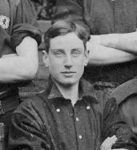
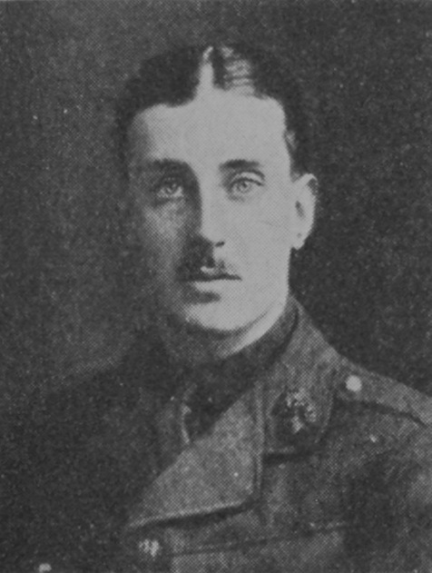

Eric Gordon Stearns


Civilian Life - Eric Stearns was born in Hornsey on 25 March 1895, the son of Thomas Stearns, an insurance official, and Alice Stearns. The family later lived at Lansdowne, Woodridings, Hatch End. Eric was educated at St John’s College and the Lower School of John Lyon, where he became a member of the football 1st XI and later a school monitor.
The Lyonian magazine of 1912 remembered him with a warm, perhaps a little tongue in cheek testimonial, when he left school. “Of all the boys who left their old School at Christmas, we want to say a few words of kindly farewell. Eric Stearns, who was a Lyonian almost from babyhood—at least, he was wonderfully small when first I saw him—has left as Monitor, member of Football 1st XI., and Six-footer. Besides that, we are in hopes that he has added the London Matriculation to his list of honours. E. S. was a really capital actor, and, alongside his bosom friend, Leo Parsons, made no small stir when he first appeared in "Twelfth Night." Into the bargain, he was always a rare good Lyonian, with an unmistakable touch of the public school boy about him, and that is no bad thing. “
Stearns subsequently worked as a clerk at the Sun Insurance Office.
Military Life - Stearns had joined the Artists’ Rifles in 1912 and volunteered for foreign service when war broke out. He received his commission as a Second Lieutenant on 6 April 1915 and was posted to the 4th Battalion, Royal Fusiliers.
While serving in the Ypres sector, Lieutenant Stearns was in charge of an engineering and infantry party tasked with digging a new frontline trench under the cover of darkness. Frontline digging parties were incredibly hazardous roles, exposed to sudden enemy flare lights, targeted machine-gun sweeps, and pre-ranged sniper fire. During the operation, his party was caught in an exchange, and Stearns was severely wounded. The contemporary account records that a bullet struck him above the hip and passed upwards. His men attempted to help him, but their efforts were unsuccessful, and he was taken by motor ambulance to a casualty station at Abeele. He died from his wounds on 6 August 1915, aged 20.
After his death, tributes came from officers and men who had served with him. His commanding officer, Lieutenant-Colonel W. F. Sweny, wrote " I have seen enough of your son to realise what a useful and cool officer he was"; Sergt. F. H. Smith: "Mr. Stearns was almost worshipped by the men under his command; they would have followed him anywhere, for they knew he was a man. He had not an atom of fear in him, and he always had a smile and a cheery word for everybody. I do not think anybody could be more liked and respected than he was." Private W. H. Leighton described how Stearns bore his wound and said that he had been a brave officer in whom the men had the greatest confidence. A further letter from his company commander described his death as a personal sorrow, while the Forces Chaplain told Stearns’s parents that their son had been “highly thought of by his senior officers” and that his men spoke of his “courage and coolness in the hour of danger.” The chaplain added that his men “would have done anything for him” and deeply felt his loss.
Eric Gordon Stearns was subsequently commemorated at St Anselm’s Church, Hatch End, and his name was recorded on a number of war memorials, including those connected with his school and the Sun Insurance Office.
To read testimonials from Eric’s school pals in life and his comrades’ testimonials in death, and when looking at the photos of him from boyhood through to manhood, it is easy to appreciate that he was a young man with a promising future, who’s life, like so many, was cut tragically short.